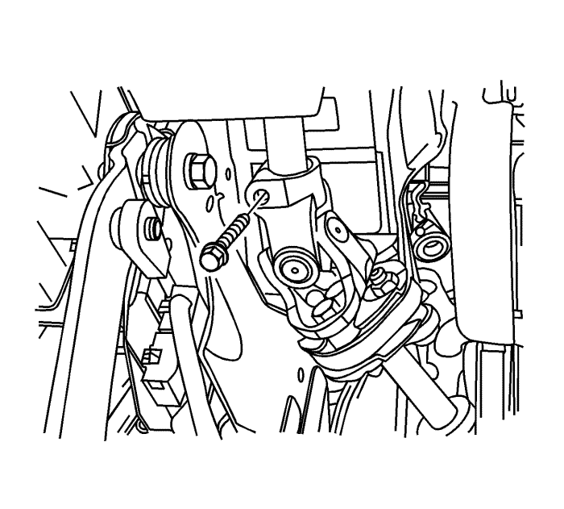

Sustitución del sensor de posición del volante
Procedimiento de desmontaje
Precaución: Consulte Atención: la columna de dirección se encuentra en la posición de bloqueo en la sección Prólogo
- Gire el volante hasta situar las ruedas en la posición de marcha en línea recta y BLOQUEE la columna de dirección.
- Desconecte el cable negativo de la batería. Consultar Desconexión y conexión del cable negativo de la batería .
- Elevar el vehículo y soportarlo de manera segura. Consultar Elevación del vehículo con un gato .
- Desmonte el conjunto de llanta y neumático delantero izquierdo. Consultar Desmontaje y montaje de la rueda y el neumático .
- Utilice pintura para realizar marcas de alineación en el husillo intermedio y en la parte inferior del eje de la columna de dirección.

- Desmonte el tornillo de sujeción superior.
- Desmonte el husillo intermedio del eje de la columna de dirección.
- Desenganche el conector del sensor de ángulo de giro.
- Mueva el sensor de ángulo de giro hacia arriba.
- Desmonte el sensor de ángulo de giro girando el sensor para extraerlo de la ranura del soporte de sujeción y deslizando el sensor hacia abajo del eje de la columna de dirección.
Procedimiento de montaje
- Deslice el sensor de ángulo de giro hacia arriba del eje de la columna de dirección hasta situar el sensor en la ranura del soporte de sujeción.
- Monte el sensor de ángulo de giro en la ranura del soporte de sujeción.
- Enganche el conector al sensor de ángulo de giro.
Nota: Compruebe que el volante está dispuesto en la posición de marcha en línea recta.
- Alinee las marcas y guíe con cuidado la junta universal del husillo intermedio por el eje de la columna de dirección.
Precaución: Consulte Precaución con las fijaciones en la sección Prólogo
- Acople el tornillo de sujeción a la junta universal del husillo intermedio y apriételo a un par de 34 N·m (25 lb. pie).
- Monte el conjunto de llanta y neumático delantero izquierdo. Consultar Desmontaje y montaje de la rueda y el neumático .
- Bajar el vehículo.
- Conecte el cable negativo de la batería. Consultar Desconexión y conexión del cable negativo de la batería .
- Lleve a cabo el procedimiento de centrado del sensor de ángulo de giro. Consultar Centrado del sensor de posición del volante .
| © Copyright Chevrolet Europe. All rights reserved |